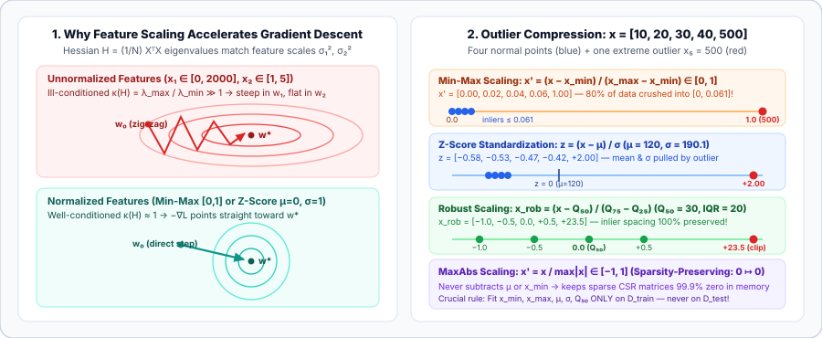

Classical Feature Scaling: Min-Max Normalization, Z-Score Standardization, Robust IQR, and MaxAbs
Before normalizing hidden activations inside a deep network, we must normalize the input features themselves. Derive Min-Max scaling, Mean normalization, Z-score standardization, Robust IQR/MAD scaling, and sparsity-preserving MaxAbs scaling—and see exactly how feature scales govern the Hessian condition number $\kappa(H)$ and outlier compression.
In machine learning and deep learning, the word normalization begins at the input data matrix $X \in \mathbb{R}^{N \times d}$. If feature $x_1$ measures annual income in dollars ($[20{,}000,\, 500{,}000]$) while feature $x_2$ measures age in years ($[18,\, 80]$) or bedrooms ($[1,\, 5]$), feeding raw coordinates into gradient descent, $k$-NN, SVMs, PCA, or a neural network’s first linear layer $z = Wx + b$ causes immediate numerical pathology. Let us derive why—and compare every standard feature-wise linear normalization rule.
1. Why raw feature scales break optimization and distance metrics
There are three distinct mathematical reasons why unscaled features hurt models:
- 1. Hessian ill-conditioning in gradient descent: Consider a linear neuron $\hat y_i = w_1 x_{i,1} + w_2 x_{i,2} + b$ trained with squared loss $\mathcal L(w) = \frac{1}{2N}\sum_{i=1}^N (w^\top x_i - y_i)^2$. The gradient and Hessian with respect to $w$ are
$$\nabla_w\mathcal L(w) = \frac{1}{N}X^\top(Xw - y),\qquad H = \nabla_w^2\mathcal L(w) = \frac{1}{N}X^\top X.$$For uncorrelated zero-mean features with variances $\sigma_1^2$ and $\sigma_2^2$, the Hessian is diagonal: $H = \operatorname{diag}(\sigma_1^2, \sigma_2^2)$. If $\sigma_1 = 1000$ (square footage) and $\sigma_2 = 1$ (bedrooms), the eigenvalues of $H$ are $\lambda_{\max} = 10^6$ and $\lambda_{\min} = 1$, giving a condition number of$$\kappa(H) = \frac{\lambda_{\max}}{\lambda_{\min}} = \frac{\sigma_1^2}{\sigma_2^2} = 10^6.$$Because gradient descent diverges unless the learning rate satisfies $\eta < \frac{2}{\lambda_{\max}} = 2\times 10^{-6}$, the update along $w_2$ crawls by $\eta\lambda_{\min} \approx 10^{-6}$ per step while zig-zagging violently across the steep $w_1$ valley. Scaling every feature so $\sigma_j^2 \approx 1$ reduces $\kappa(H)$ from $10^6$ to $\approx 1$, turning elongated elliptical canyons into spherical bowls.
- 2. Activation saturation at initialization: In a neural layer $z = \sum_{j=1}^d w_j x_j + b$, if $x_1 \sim 10^5$ and $w_1 \sim \mathcal N(0, 1/d)$, then $|z| \gg 100$ on the very first forward pass, pushing $\sigma(z)$ or $\tanh(z)$ deep into their flat saturation tails where $\sigma'(z) \approx 0$.
- 3. Metric and regularization asymmetry: Euclidean distance $\|x - x'\|_2^2 = \sum_{j=1}^d (x_j - x'_j)^2$ is completely dominated by whichever column has the largest numeric units. Likewise, an isotropic $L_2$ weight penalty $\frac{\lambda}{2}(w_1^2 + w_2^2)$ penalizes the weight on a small-scale feature ($x_2 \in [0, 1]$, which requires a large $w_2$) thousands of times more heavily than the weight on a large-scale feature ($x_1 \in [0, 10^5]$, which requires a tiny $w_1$).

2. Min-Max Normalization (Min-Max Scaling) and Mean Normalization
Min-Max Normalization (often called Min-Max Scaling or `MinMaxScaler`) linearly rescales each feature column $j$ using its empirical minimum $x_{\min} = \min_{1\le i\le N} x_i$ and maximum $x_{\max} = \max_{1\le i\le N} x_i$ so that every training sample lands exactly in the closed unit interval $[0, 1]$:
More generally, to map a feature into any target interval $[a, b]$ (most commonly $[-1, 1]$ for symmetric neural inputs or diffusion models), we apply:
For example, 8-bit RGB image intensities $x \in [0, 255]$ have known physical bounds $x_{\min}=0, x_{\max}=255$. Mapping to $[0, 1]$ gives $x' = x/255$, and mapping to $[-1, 1]$ gives $x' = 2(x/255) - 1 = \frac{x - 127.5}{127.5}$.
A closely related variant is Mean Normalization, which centers the feature at zero using the sample mean $\mu = \frac{1}{N}\sum_{i=1}^N x_i$ while still dividing by the range $R = x_{\max} - x_{\min}$:
Key mathematical properties of Min-Max Scaling:
- Exact shape preservation: Because $x' = \alpha x + \beta$ with $\alpha = \frac{1}{x_{\max}-x_{\min}} > 0$ is a positive affine transformation, all pairwise distance ratios $\frac{|x_i' - x_k'|}{|x_m' - x_n'|}$, skewness, kurtosis, and multimodal peaks are preserved identically.
- Hard boundedness: Unlike Z-score standardization, training outputs are strictly guaranteed to lie in $[a, b]$.
- Fatal weakness — Zero breakdown point under outliers: Because $\min$ and $\max$ depend solely on the two most extreme points in the dataset, a single corrupted or heavy-tailed sample expands the denominator $x_{\max} - x_{\min}$ and crushes all normal inliers into a microscopic sub-interval. If normal values lie in $[10, 40]$ (range $30$) and one outlier is $500$, the range becomes $500 - 10 = 490$, so $100\%$ of normal data is compressed into $[0,\, 30/490] = [0,\, 0.0612]$, reducing the effective variance of the normal data by $(490/30)^2 \approx 267\times$!
3. Z-Score Standardization (`StandardScaler`)
Instead of bounding the extreme endpoints, Z-Score Standardization centers each feature to zero mean and scales it to unit variance using the empirical mean $\mu$ and standard deviation $\sigma$:
After Z-score standardization, every feature column satisfies two exact moment identities:
- Why neural networks and PCA prefer Z-score over Min-Max on unbounded features: Centering inputs at $\mu = 0$ ensures that the input vector $x$ does not lie entirely in the positive orthant $\{x : x_j \ge 0\}$. When all inputs $x_j > 0$, the gradient of a weight vector $\nabla_w\mathcal L = \frac{\partial\mathcal L}{\partial z} x$ must have the exact same sign across all coordinates $j$ for a single sample, forcing weights to update only along the all-positive/all-negative diagonal (LeCun et al., Efficient BackProp, 1998). Zero-centering via $z_i = (x_i - \mu)/\sigma$ removes this constraint.
- Dataset-wide channel standardization in Computer Vision: Even after dividing pixel values by $255$ into $[0, 1]$, standard vision pipelines apply Z-score standardization across the entire training corpus per RGB channel—for ImageNet, subtracting $\mu_{\text{RGB}} = [0.485, 0.456, 0.406]$ and dividing by $\sigma_{\text{RGB}} = [0.229, 0.224, 0.225]$—so that the first convolutional layer receives zero-mean, unit-variance inputs in every color channel.
- Important misconception: Z-score standardization does not make a skewed or bimodal distribution Gaussian! Because $z = \frac{1}{\sigma}x - \frac{\mu}{\sigma}$ is still a linear transformation, it only sets the first two moments $(\mu=0, \sigma^2=1)$ while leaving skewness $\mathbb E[z^3]$ and kurtosis $\mathbb E[z^4]$ completely unchanged. (To reshape skewed distributions, see Chapter 02 on Box-Cox, Yeo-Johnson, and Quantile Normalization.)
4. Robust Scaling: Median, IQR, and MAD Normalization
Both Min-Max and Z-score scaling have a statistical breakdown point of $0\%$: sending a single sample $x_N \to \infty$ sends $x_{\max} \to \infty$, $\mu \to \infty$, and $\sigma \to \infty$, collapsing every other normalized coordinate to $0$. When features contain heavy tails, sensor spikes, or financial/medical outliers, Robust Scaling (`RobustScaler`) replaces the mean with the median $Q_{50}$ and the standard deviation with the Interquartile Range (IQR):
where $Q_{25}, Q_{50}, Q_{75}$ are the $25\text{th}$, $50\text{th}$, and $75\text{th}$ percentiles. Up to $25\%$ of the data in each tail can move to $\pm\infty$ without changing $Q_{50}$ or $\operatorname{IQR}(x)$ at all!
An even higher-breakdown alternative ($50\%$ breakdown point) uses the Median Absolute Deviation (MAD):
Why the constant $1.4826$? For a standard normal random variable $Z \sim \mathcal N(0, 1)$, half of the probability mass lies inside $[-z_{0.75}, +z_{0.75}]$ where $\Phi(z_{0.75}) = 0.75 \implies z_{0.75} = \Phi^{-1}(0.75) \approx 0.67449$. Therefore $\operatorname{MAD}(\mathcal N(0,\sigma^2)) = 0.67449\,\sigma$, and multiplying by $1/0.67449 \approx 1.4826$ makes $1.4826\cdot\operatorname{MAD}(x)$ a consistent estimator of $\sigma$ on Gaussian inliers while completely ignoring up to $50\%$ corrupted outliers.
Worked numerical comparison on $x = [10, 20, 30, 40, 500]$
Let us compute the exact transformed values for $x = [10, 20, 30, 40, 500]$ across all three methods:
- Min-Max $[0, 1]$: $x_{\min} = 10$, $x_{\max} = 500$, range $= 490$.
$$x_{\text{minmax}}' = \left[\frac{0}{490},\, \frac{10}{490},\, \frac{20}{490},\, \frac{30}{490},\, \frac{490}{490}\right] = \big[0.000,\, 0.020,\, 0.041,\, 0.061,\, 1.000\big].$$Notice how the four normal points are squished into a tiny $0.061$-wide sliver near zero.
- Z-Score Standardization: $\mu = \frac{10+20+30+40+500}{5} = 120$, population $\sigma = \sqrt{\frac{1}{5}(110^2+100^2+90^2+80^2+380^2)} = \sqrt{36200} \approx 190.26$.
$$z = \big[-0.578,\, -0.526,\, -0.473,\, -0.420,\, +1.997\big].$$All four normal samples are pushed negative (since the outlier dragged $\mu$ up to $120$) and compressed to a spacing of only $0.053$ per step.
- Robust Scaling (Median & IQR): The median is $Q_{50} = 30$. With quartiles $Q_{25} = 20$ and $Q_{75} = 40$, $\operatorname{IQR} = 40 - 20 = 20$.
$$x_{\text{IQR}}' = \left[\frac{10-30}{20},\, \frac{20-30}{20},\, \frac{30-30}{20},\, \frac{40-30}{20},\, \frac{500-30}{20}\right] = \big[-1.0,\, -0.5,\, 0.0,\, +0.5,\, +23.5\big].$$The four normal samples have clean $0.5$-unit spacing centered at $0$, and the outlier stands out unmistakably at $+23.5$ (where it can be clipped or passed through a smooth saturating transform).
5. MaxAbs Scaling (`MaxAbsScaler`) and Decimal Scaling: Preserving Sparsity
What if your input matrix $X \in \mathbb{R}^{N \times d}$ is a sparse matrix—such as TF-IDF document vectors, one-hot/multi-hot categorical encodings, or user-item interaction matrices where $99.9\%$ of entries are $0$? If you apply Z-score standardization or Min-Max scaling (when $x_{\min} \ne 0$), subtracting $\mu \ne 0$ maps every single zero entry to a nonzero constant:
Turning a $100{,}000 \times 100{,}000$ sparse CSR matrix with $0.01\%$ nonzeros ($8\text{ MB}$) into a dense matrix of $-\mu_j/\sigma_j$ values explodes memory to $80\text{ GB}$! MaxAbs Scaling (`MaxAbsScaler`) solves this by dividing each column by its maximum absolute value without subtracting any shift:
Because $x_{\text{maxabs}}'$ is purely multiplicative, $0 \mapsto 0$ identically, preserving exact sparse storage while bounding every feature inside $[-1, 1]$. (When $x_i \ge 0$ and $x_{\min} = 0$, Min-Max $[0,1]$ and MaxAbs coincide.) A simpler classical cousin used in database normalization is Decimal Scaling, $x_{\text{dec}}' = x_i / 10^k$, where $k = \lceil \log_{10}(\max_i |x_i|) \rceil$ is the smallest integer power of $10$ ensuring $|x_{\text{dec}}'| < 1$.
6. Summary comparison of classical linear scalers
| Method | Formula | Output Range / Moments | Preserves Sparsity ($0\mapsto 0$)? | Outlier Robustness | Best Used When |
|---|---|---|---|---|---|
| Min-Max $[0,1]$ | $\dfrac{x - x_{\min}}{x_{\max} - x_{\min}}$ | $[0, 1]$ on train set | Only if $x_{\min}=0$ | None ($0\%$ breakdown) | Fixed physical bounds (images $[0,255]$, percentages, bounded histograms) |
| Min-Max $[a,b]$ | $a + \dfrac{(x - x_{\min})(b-a)}{x_{\max} - x_{\min}}$ | $[a, b]$ (e.g. $[-1,1]$) | No (unless $a=0, x_{\min}=0$) | None ($0\%$ breakdown) | Zero-centered bounded inputs for $\tanh$ or diffusion models ($[-1,1]$) |
| Mean Norm | $\dfrac{x - \mu}{x_{\max} - x_{\min}}$ | $(-1, 1)$, mean $0$ | No | None ($0\%$ breakdown) | Zero-centered features with bounded range |
| Z-Score | $\dfrac{x - \mu}{\sigma}$ | $\mu = 0, \sigma = 1$ (unbounded) | No | Low ($\mu,\sigma$ sensitive to tails) | Default for MLPs, linear models, SVMs, PCA, K-Means, and RGB channels |
| Robust (IQR / MAD) | $\dfrac{x - Q_{50}}{Q_{75} - Q_{25}}$ | Median $0$, $\operatorname{IQR}=1$ (unbounded) | No | High ($25\%\text{–}50\%$ breakdown) | Tabular data with heavy tails, financial/sensor spikes, uncleaned outliers |
| MaxAbs | $\dfrac{x}{\max_k |x_k|}$ | $[-1, 1]$ on train set | Yes ($0 \mapsto 0$) | None ($0\%$ breakdown) | Sparse matrices (CSR/CSC), bag-of-words, TF-IDF, already-centered data |
7. Preventing train/test data leakage in PyTorch & NumPy
The single most common bug when applying feature normalization is computing statistics $(\min, \max, \mu, \sigma, Q_{50}, \operatorname{IQR})$ on the full dataset before splitting into train, validation, and test sets. Doing so leaks future/test distribution information (such as test-set maximums, variance shifts, or outlier spikes) into training—especially fatal in time-series forecasting, financial modeling, and small-sample cross-validation.
The ironclad rule is: fit the scaler parameters $\theta_{\text{scale}}$ strictly on $\mathcal D_{\text{train}}$ (or strictly inside the training split of each CV fold), and reuse those frozen $\theta_{\text{train}}$ parameters to transform $\mathcal D_{\text{val}}$ and $\mathcal D_{\text{test}}$.
import torch
# Toy column with 4 normal training points + 1 extreme outlier, and 2 test points
x_train = torch.tensor([[10.0], [20.0], [30.0], [40.0], [500.0]])
x_test = torch.tensor([[5.0], [25.0], [600.0]]) # 5 < train_min, 600 > train_max!
# 1. Min-Max Scaling fit ONLY on x_train
x_min = x_train.min(dim=0, keepdim=True).values
x_max = x_train.max(dim=0, keepdim=True).values
train_minmax = (x_train - x_min) / (x_max - x_min + 1e-8)
test_minmax = (x_test - x_min) / (x_max - x_min + 1e-8)
# Optional: clamp test set to [0, 1] if downstream layer requires strict bounds
test_minmax_clamped = test_minmax.clamp(0.0, 1.0)
# 2. Z-Score Standardization fit ONLY on x_train
mu = x_train.mean(dim=0, keepdim=True)
std = x_train.std(dim=0, unbiased=False, keepdim=True)
train_z = (x_train - mu) / (std + 1e-8)
test_z = (x_test - mu) / (std + 1e-8)
# 3. Robust Scaling (Median + IQR) fit ONLY on x_train
q25, q50, q75 = torch.quantile(x_train, torch.tensor([0.25, 0.50, 0.75]), dim=0, keepdim=True)
iqr = q75 - q25
train_rob = (x_train - q50) / (iqr + 1e-8)
test_rob = (x_test - q50) / (iqr + 1e-8)
print("Train Min-Max:", train_minmax.squeeze().tolist())
print("Test Min-Max (unclamped):", test_minmax.squeeze().tolist())
print("Train Robust :", train_rob.squeeze().tolist())8. Questions worth answering
Yes! Because $x_{\min}^{\text{train}}$ and $x_{\max}^{\text{train}}$ are fit strictly on the training set, any unseen test sample with $x_{\text{test}} < x_{\min}^{\text{train}}$ produces $x_{\text{test}}' < 0$, and any test sample with $x_{\text{test}} > x_{\max}^{\text{train}}$ produces $x_{\text{test}}' > 1$. Linear and neural layers handle slight extrapolation naturally, whereas pipelines feeding into $\sqrt{x'}$, $\ln(x')$, or fixed look-up tables must explicitly apply $\operatorname{clip}(x', 0, 1)$.
No! Axis-aligned decision trees split a feature $x_j$ by comparing $x_j \le \tau$, which depends only on the rank ordering of $x_j$. Because any strictly increasing transformation $f(x_j)$ (including Min-Max, Z-score, Robust scaling, and even $\log(1+x)$) preserves order ($x_j \le \tau \iff f(x_j) \le f(\tau)$), tree splits and impurity gains are completely invariant to monotonic feature scaling. Gradient-based models (neural networks, logistic/linear regression), distance-based models ($k$-NN, $k$-Means, RBF-kernel SVMs), and variance-maximizing projections (PCA) do require scaling.
In deep regression when $y$ spans large or unknown magnitudes (e.g., predicting house prices in $\$10^5\text{–}\$10^7$ or molecular energies), standardizing the target $\tilde y = (y - \mu_y)/\sigma_y$ keeps MSE gradients $\nabla\mathcal L \propto (\hat y - \tilde y)$ at $\mathcal O(1)$ regardless of physical units, allowing standard learning rates and initializations. At inference time, invert the transform via $\hat y_{\text{raw}} = \sigma_y \hat y + \mu_y$.
Sources
LeCun, Bottou, Orr, and Müller, Efficient BackProp (1998); Scikit-Learn User Guide: Preprocessing Data — Standardization, Range Scaling, and Robust Scaling; Huber and Ronchetti, Robust Statistics (2nd ed., Wiley, 2009).